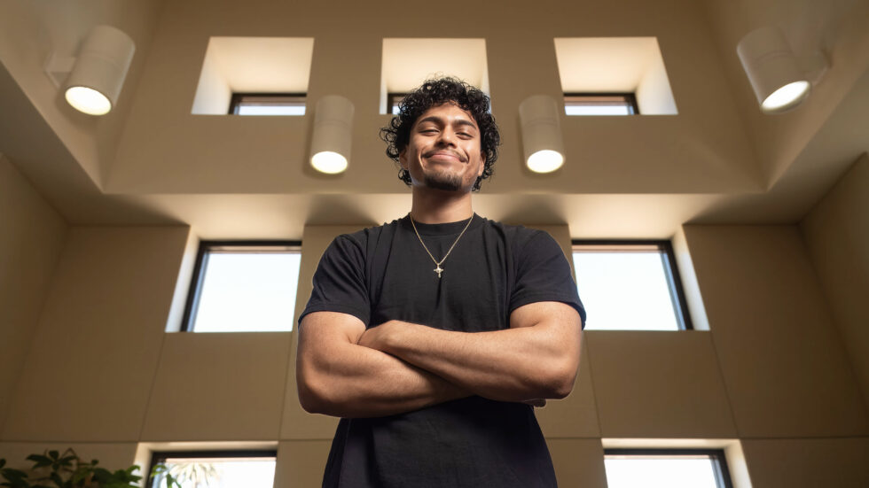

Who is...

Edgar Olozagaste-Olea
Estimated Reading Time: ~5mins.
The longer Speal
Hello! My name is Edgar Olozagaste-Olea and I am a latino, first-generation, 3rd-year Computer Science student at Cal Poly SLO. I chose to study CS because I've always been drawn to technology and creation, which my aspired career of Software Engineering combines perfectly.
My Beginnings
My love for technlogy started young. I'd often beg my mom for us to go visit cousins house soley because they had a desktop computer. In my young brain, this was the most amazing invention I'd ever lay eyes on. When allowed, I'd spend hours on it. Sometimes not even on video games but just messing around in the settings. I'd try to figure out as much as I could of the beautiful machine in front of me (or as much as my 10 year old brain could comprehend of the Windows 8 OS). I knew that computers fascinated me and their logical flow came natrually to me, which didn't go unnoticed to others as well. In 4th grade I proudly recieved my teacher's individual award of "Classroom Computer Wiz" (see pic on timeline). Because of my previous expertise with my cousin's computer, when my elementary school began recieving chromebooks, I often found myself "ahead of the game" when it came to troubleshooting commonly faced issues. I'd end up happily helping fellow classmates and even at times, my own teachers, with their "IT needs" (who knew I'd return to this in college).
Code & Challenges
Fast foward to 11th grade and I finally take my first coding class; Intro to Web Development. I immediately fell in love with creating websites and often found myself creating beyond the classroom. Unfortunatley, difficult family circumstances hindered my performance in school and my grades were not reflecting a college bound student. Up until that point I wasn't sure what life after high school would look like for me. However, my previous love for computers and expansion of it through web design help me realized that I wanted to attend college to study computer science. Looking deeper, I desperatley wanted to be in a position to which I could free my family of financial burden as well as set a great example for my younger siblings. This I felt college could do for me. I knew needed to put more effort into school and so I did and proved it by making my junior year of high school my 1st year I ever recieved all As. I even attended two web design competitions hosted by SkillsUSA in 2024-25 and placed 1st in a team of two both in regionals and in states (see more on timeline).
College Life
When my 12+ years of schooling finally paid off, I was on my way to my dream university with some generous scholarships to go along with. Though, I soon came to realize the real struggle was only to come. College coursework was far more rigourous than I had expected and prepared for. Because of this, my first two years have been not only been academically challenging but mentally as well. However, I am lucky that Cal Poly has offered me just as much resources and experiences to balance the hardship that comes with being a college student. I was blessed with such an amazing job at the Cal Poly ITS Service Desk and recently moved up the ladder into Student Lead. This job has provided me with the oppportunity to expand on my technical and soft skills whilst also helping others. Furthermore, it allows me to expeiernce interactions in which I am directly helping others; Something I have come to value deeply.
Hobbies & Music
Aside from tech, my hobbies include going to the gym, kickboxing, playing a single game of Fortnite and getting off before I break my monitor, spending time with my family and friends, cooking and eating, and expanding my relationship with God. My biggest hobby recently has been guitar playing. I picked up the guitar on July 2025 and have not put it down since. I was never one to like music much growing up but I've been making that up recently as now I have completly fallen in love. So much so, that I decided to puruse a Music Minor at Cal Poly for a more formal understanding of music. This is one of my prouder hobbies as I feel is one I truly came across so natrually. I also love that through it, I was able to prove a long lasting mindset of my self wrong. I used to believe I wasn't a creative person and that I was made with a stronger "logical side of my brain". However, after picking up my first intrsument and slowly falling in love with music, I realize how wrong I was and how capabale I am to not just be logical and solve problems, but express my self freely and creatively through art such as music. This 2026 Summer, I am going to continue to improve on my guitar playing daily and I am excited to expand my music knowledge and listening generes as I progress in my passion for music.
Conclusion
So, thank you for reading this lengthy speal about myself, I tried my best to keep it short but I tend to yap, a lot. I hope you got a little taste of who I am but in summary, I aspire to have a career as a Software Engineer who can make an impact on others lives by solving problems creativley whilst also continuing to love my everygrowing hobby in Music.
Timeline
-
Fall 2022
Started B.S. Computer Science
Cal Poly SLO · San Luis Obispo, CA
-
Joined ITS Service Desk
Cal Poly SLO · Student Technician
-
Promoted to Student Lead
Cal Poly SLO ITS · Current role
-
Declared Music Minor
Cal Poly SLO
-
Picked up the guitar
Mexican regional — corridos, sierreños
-
First real song, start to finish
-
-
Now
Building edgaroo.dev
This site — plain HTML/CSS, moving to Next.js
now playing on Spotify
El Toro Relajo
my playing — clips
Let's get connected:
I'm readily open to collaborations, internships, or just a good conversation about tech, music, or Cal Poly life.
 Email me
Email me
 GitHub
GitHub
 LinkedIn
LinkedIn
Built with Next.js · Deployed on Vercel · © 2025